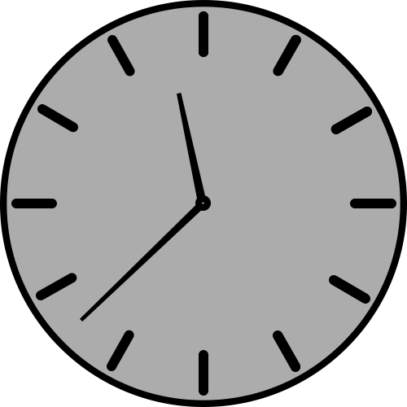

Ceturtdienas rīts

Šis rīts ir tikpat smags kā vakardienas, jo šodien 8:30 notiek lekcija Tīmekļa dizaina pamatos, kuru māca S.Zariņa. Šajā lekcijā mums iemāca teoriju kā jāizskatās mājaslapai un parāda piemērus, pēc kuriem vajadzētu tiekties. Beidzoties šai lekcijai, nākošā lekcija notiek Formālās gramatikas kursā, kuru vada A.Šostaks. Šeit mums iemāca par magazīnas automātu, kuru vēlāk varēs pielietot dažādos algoritmos.
Lekcijas un darbs
Tāpat kā parasti, tā arī šodien es atrodu brīvo laiku, lai izpildītu nepieciešamos uzdevumus. Tā kā nākošā lekcija ir datu bāzes, dažus brīžus es atvēlu darba uzdevumu pildīšanai. Beidzoties šai lekcijai, nākošās divas stundas ir brīvas, tāpēc es izlemju aiziet uz Daily, kas atrodas LU pagrabā. Paēdis pusdienas, pārējo laiku atvēlu nepieciešamo darba uzdevumu izpildei Pulksten 16:30 sākas C kursa lekcija Kritiskā domāšana, kuru vada n T.Stepiņš. Tā ir vienīgā lekcija, kas nenotiek LU Datorikas fakultātes telpās, tāpēc man jādodas uz LU filozofijas fakultāti, kura, atrodas piecu minūšu attālumā no manas fakultātes. Šajā lekcijā es iemācos par kritiskās domāšanas stiliem un, izrunājot teoriju, mēginām atrast slēdzienu pazīmes iedotajos piemēros.
Vēlie praktiskie darbi

Beidzoties šai lekcijai, es eju atpakaļ uz LU Datorikas fakultāti, jo tur šodien vēl notiks praktiskie darbi Tīmekļa dizaina pamatos. Šeit es pavadu lielāko daļu sava laika, lai pabeigtu ceturto uzdevumu. Pēc tam dodos uz mājām. Ir jau vēls vakars, līdz ar to nekas interesants nenotiek. Pārējo laiku parasti pavadu atpūšoties un neilgi pirms pusnakts eju gulēt, jo šī diena priekš manis bija smaga.